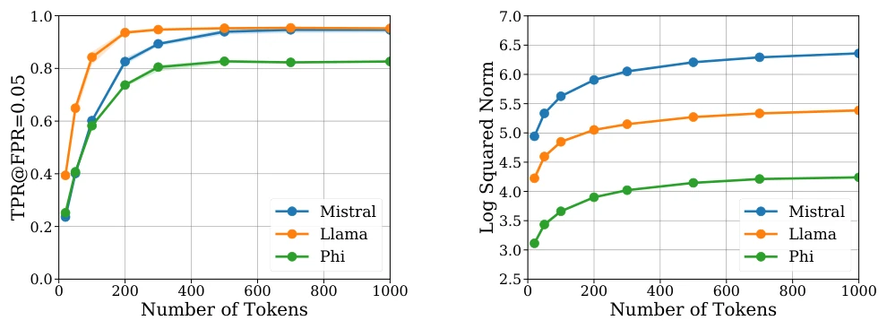
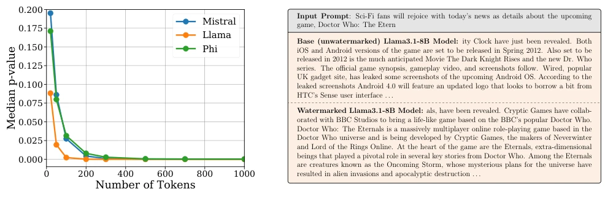
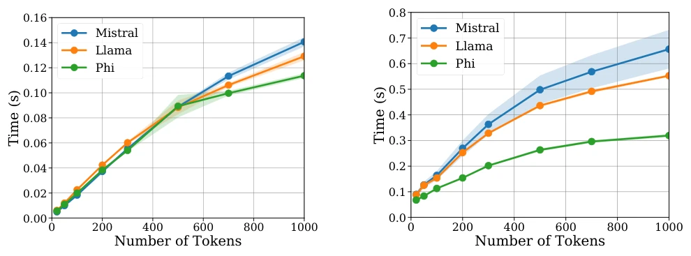
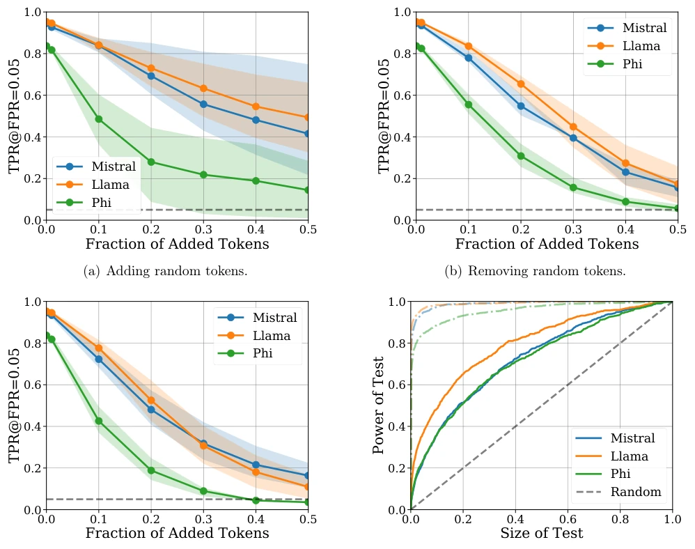
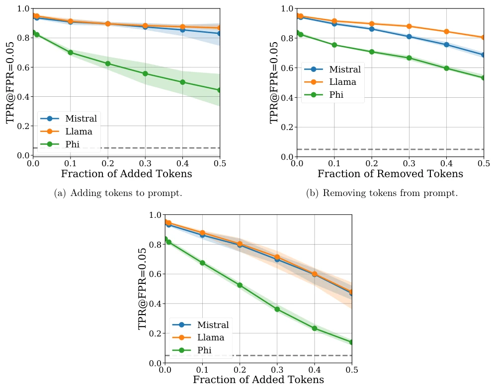
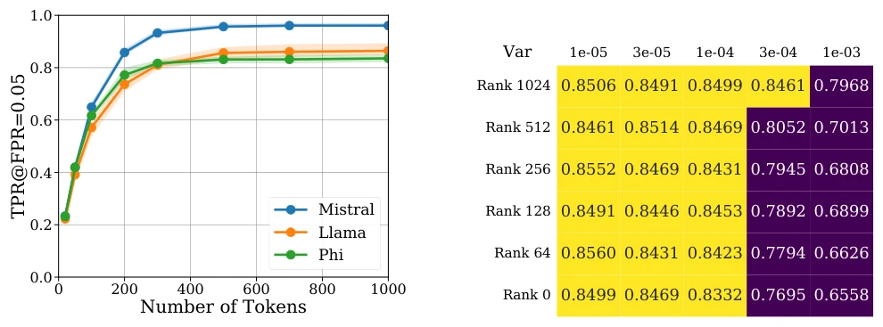
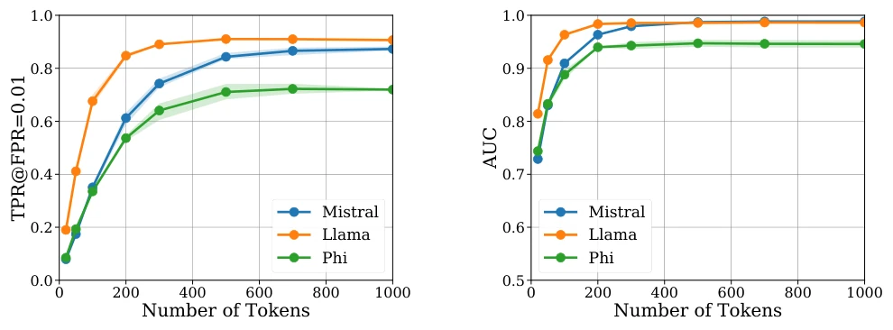
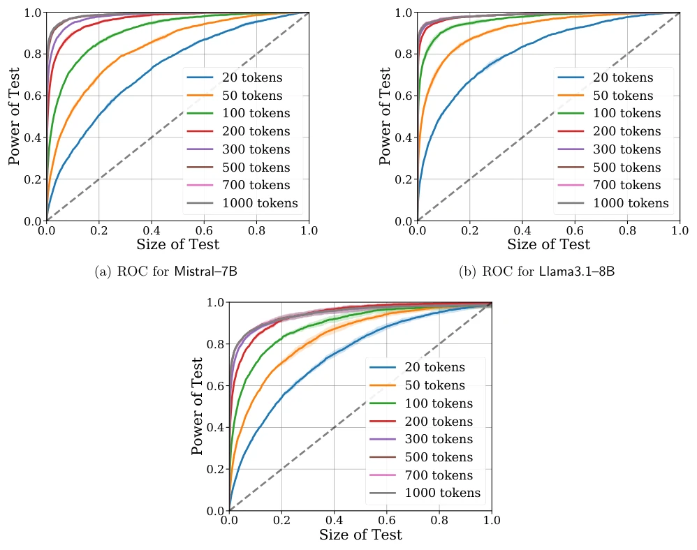
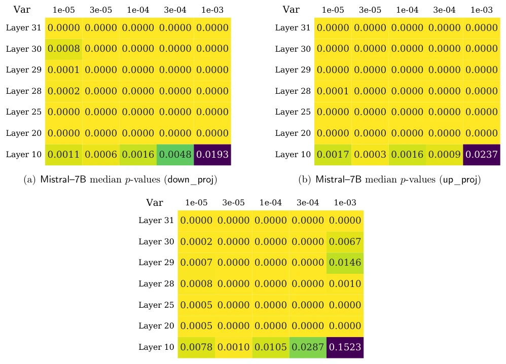
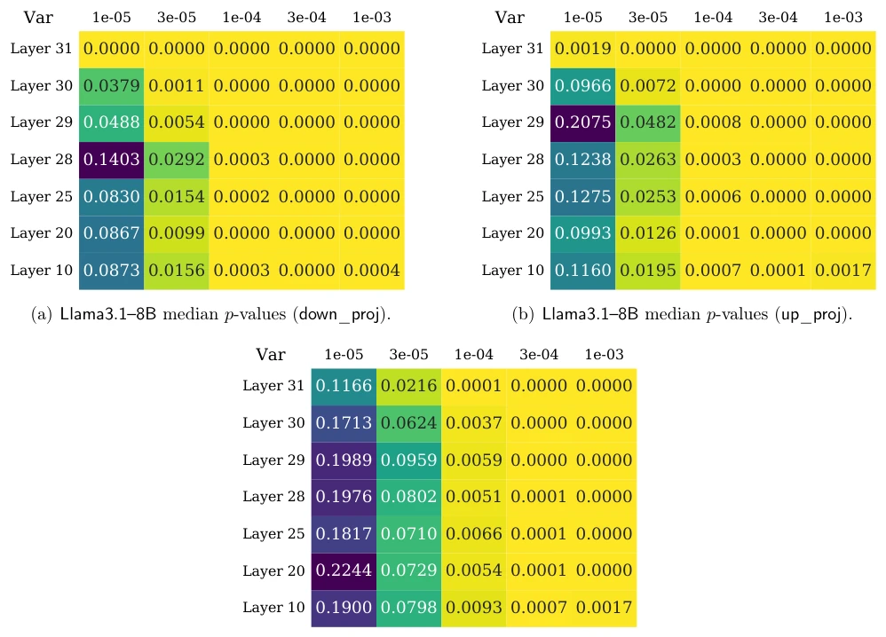

This GaussMark paper attempts to upgrade the structure of LLM watermarks, embedding signals into weights rather than the text stream. The authors claim zero latency, zero quality loss, and statistical guarantees, sounding like a free lunch. However, compared to Kirchenbauer et al.'s distortion-free methods, detection rates may be slightly inferior. For the Embodied AI field, can this technology be used to mark robot conversations? It is somewhat cross-disciplinary. The biggest drawback is that structural watermarks sound high-end, but essentially still add noise, and detection power decreases for low-entropy models like Phi3.5. However, since it does not interfere with inference speed, it is quite practical as a rapid verification tool, suitable for latency-sensitive scenarios.
研究动机Motivation
LLM 生成文本能力太强，引发伦理担忧，如学术抄袭和虚假信息传播。现有水印技术多关注 token 级采样，如 Kirchenbauer et al. [2023a,b]，存在生成延迟、文本质量下降或鲁棒性不足的问题。Kuditipudi et al. [2023] 等方法虽保证统计有效性，但往往忽略语言结构。GaussMark 旨在解决这些痛点，通过修改模型权重而非采样过程，实现无延迟水印，并提供形式化统计保证，防止误判，如学生被冤枉作弊。此外，它利用权重扰动，避免了传统方法对生成概率分布的强约束。
LLM text generation capabilities are too strong, raising ethical concerns such as academic plagiarism and misinformation dissemination. Existing watermarking techniques mostly focus on token-level sampling, such as Kirchenbauer et al. [2023a,b], suffering from issues like generation latency, text quality degradation, or insufficient robustness. Methods like Kuditipudi et al. [2023] ensure statistical validity but often ignore linguistic structure. GaussMark aims to address these pain points by modifying model weights rather than the sampling process, achieving latency-free watermarking and providing formal statistical guarantees to prevent false accusations, such as students wrongly accused of cheating. Additionally, it utilizes weight perturbation, avoiding strong constraints on the generation probability distribution imposed by traditional methods.
GaussMark includes two stages: Generate and Detect. During Generate, sample key xi from N(0, sigma^2 I), add directly to model weights theta to obtain theta(xi) = theta + xi, then generate text using the perturbed model. During the Detect stage, utilize statistical independence testing, calculate statistic psi(y, xi|x) = <xi, grad_theta log p_theta(y|x)> / (sigma ||grad_theta log p_theta(y|x)||). If psi exceeds the threshold, it is judged as watermarked. The theory is based on Gaussian rotation invariance and the property that gradient norms grow with sequence length, assuming the model is locally approximated as linear softmax. In implementation, only single-layer MLP weights need modification, reducing memory overhead, and without needing to modify the inference engine.

Figure 2: Effect of length of generated token sequence on p-values for GaussMark averaged over 3 seeds. (a) The fraction of detected watermarked responses at p = 0.05 increases significantly as the number of tokens in the generated text increases, with Phi3.5–Mini being more challenging to watermark than Llama3.1–8B and Mistral–7B. (b) The increase of the gradient norm of the log- likelihood of the watermarked text with respect to the model parameters as the number of tokens in the generated text increases.
Experiments were conducted on Llama3.1-8B, Mistral-7B, and Phi3.5-Mini, using the C4 dataset. Evaluation metrics include p-value, detection rate TPR@FPR, latency, and quality benchmarks such as SuperGLUE, GSM-8K, etc. Results show GaussMark generation detection is extremely fast, millisecond-level, with almost no quality loss. It is robust to perturbations such as insertion, deletion, translation, etc. Phi3.5 is harder to detect due to low entropy. Ablation experiments show the rank-reduced version can further balance quality and detection power. Figure 2 verifies the positive correlation between gradient norms and detection power, Figure 3 demonstrates the low-latency characteristics.

Figure 1: Demonstration of the efficacy of GaussianMark on C4 prompts. (a) The median p-value of our detection procedure on 1K watermarked generations for different numbers of generated tokens averaged across 3 seeds. (b) Examples of watermarked text generated via GaussMark.Generate on Llama3.1-8B model. The full text completions are given in Appendix H.1

Figure 3: Latency of GaussMark in seconds for generation (a) and detection (b) as number of generated tokens increases. Note that both generation and detection processes are highly efficient, ensuring practical applicability of our approach.

Figure 4: Demonstration of robustness of GaussMark to four kinds of corruptions. We demonstrate the effects of (a) random insertions of tokens, (b) random deletions of tokens, and (c) random substitutions of tokens on the rate of detection of true positives of watermarked text averaged over 3 seeds. We also consider the effect that (d) roundtrip translation (through French) has on the ROC curve and include the ROC curves of the watermarked model on uncorrupted data for reference. Note that GaussMark is relatively robust to token-level corruptions and retains nontrivial power even after the more challenging roundtrip translation attack.

Figure 5: Demonstration of robustness of GaussMark to ignorance of prompt. We demonstrate the effects of (a) inserting, (b) deleting, and (c) substituting parts of the prompt on the fraction of detected sequences at the p = 0.05 level. Note that GaussMark is robust to these corruptions, as the p-values remain relatively stable across different prompt corruptions, demonstrating that knowing the prompt is not necessary for watermark detection.

Figure 6: Demonstration of effect of of rank-reduced GaussMark. (a) The fraction of detected watermarked responses at p = 0.05 for the rank-reduced version of GaussMark averaged over 3 seeds for each model. (b) The effect of rank-reduction on GaussMark.Generate as measured by the performance of Phi3.5–Mini on GSM–8K. Each curve reflects a different number of the top principal components preserved by GaussMark, with the x-axis being the variance of added noise. As more PCs are removed, Phi3.5–Mini can handle greater variance without a corresponding reduction in performance.

Figure 7: Effect of number of tokens on the detectability of GaussMark as measured by (a) the True Positive Rate at p = 0.01 and (b) the AUC of the ROC. As the number of tokens increases, the detectability of the watermark improves, as predicted by the theory.

Figure 8: Effect of number of tokens on the detectability of GaussMark as measured by the ROC curves for (a) Mistral–7B, (b) Llama3.1–8B, and (c) Phi3.5–Mini. As the number of tokens increases, the ROC curve shifts to the left, indicating better detectability. The trivially achievable ROC curve of a random test is shown in gray for comparison.

Figure 10: Detectability of watermarked Mistral–7B models with GaussMark for different layers and variances as measured by the median p-value over 1K prompts for (a) down_proj, (b) up_proj, and (c) gate_proj, colored by value.

Figure 11: Detectability of watermarked Llama3.1–8B models with GaussMark for different layers and variances as measured by the median p-value over 1K prompts for (a) down_proj, (b) up_proj, and (c) gate_proj, colored by value.